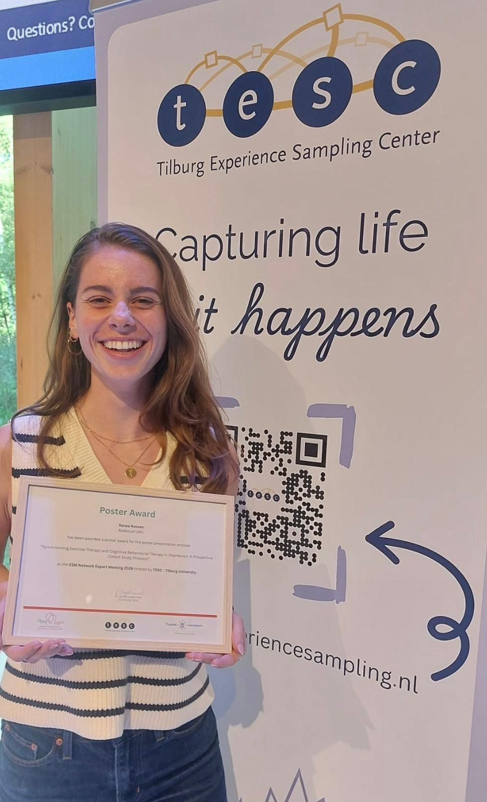
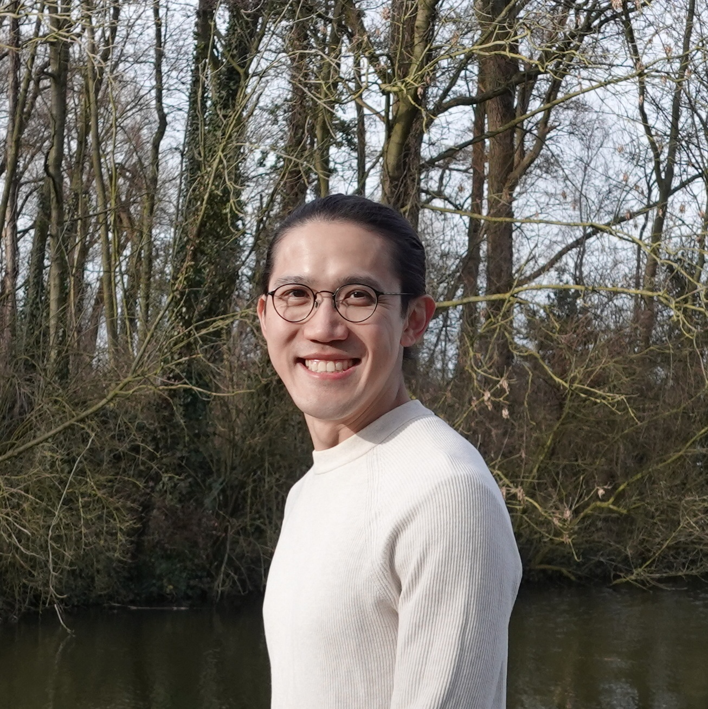

Latest News
LinkedIn official
October 19th, 2026
As of now, REMAC has its own LinkedIn page! I guess it cannot get more real than this. Follow us to keep up to date with upcoming meetings and to share relevant papers, tools, and conferences.
Renee Roosen won best poster price!
October 1st, 2026
The poster session is always one of the highlights of the ESM Network Meeting, this year organized by Tilburg University. And you know what?! The best poster price was won by one of our own: Renee Roosen. Congratulations!
Renee presented her study on combined exercise and CBT treatment to reduce depressive symptoms, including an EMA period. She aims to assess how exercise shapes treatment outcomes, why it has these effects, and for whom it is most effective.

Upcoming defense: Edmund Lo
March 31st, 2026
On Tuesday June 2nd at 16.30, Tak Tsun (Edmund) Lo will defend his PhD titled "Between Moments, Between Emotions". His thesis draws attention to type-related changes in everyday emotional processes, extending conventional approaches that focus only on changes in (average) intensity. More Info & RSVP.

Old news
October 2nd, 2025: Celebrating REMAC as ESM Network hub
REMAC is now officially part of the Belgian-Dutch Network for ESM Research in Mental Health. We're looking forward to keeping up to date on recent advances in ESM/EMA research, to building our connections, and to starting new (inter)national collaborations.